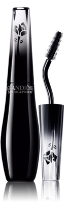

“ 속눈썹을 하나로 뭉쳐 크고 두껍게 표현하거나 속눈썹 위아래에 마스카라를 풍성하게 바르고 페이크 래시를 이용해 인형처럼 또렷한 눈매를 완성한 게 포인트 ”
"

LANCOME
Grandiose Smudge Proof Mascara

MAC
False Lashes Extreme Black Mascara

SISLEY
So Curl Mascara
시즌별 유행할 패션과 메이크업 트렌드를 한눈에 파악할 수 있는 해외 유명 컬렉션은 트렌드에 민감한 사람들에게 빼놓을 수 없는 필수 코스다. 닥스, 마크 제이콥스, 오주르 르주르, 모스키노 등 해외 패션브랜드들이 이번 시즌 주목한 메이크업은 과장된 속눈썹이 돋보이는 ‘오버 래시 메이크업’. 속눈썹을 한 올 한 올 정성스럽게 올린 여성스런 느낌이 아니라, 속눈썹을 하나로 뭉쳐 크고 두껍게 표현하거나 속눈썹 위아래에 마스카라를 풍성하게 바르고 페이크 래시를 이용해 인형처럼 또렷한 눈매를 완성한 게 포인트. 런웨이의 모델들이 만화 속 주인공이나 전쟁을 앞둔 여전사처럼 보일 정도로 강렬하고 엣지 있는 래시 메이크업이 이번 시즌 트렌드니 햇살이 뜨거워지는 5월, 아이라인보다 속눈썹에 힘을 실어보는 건 어떨까. 오버 래시 메이크업은 과장된 속눈썹에 있기 때문에 마스카라 사용법이 제일 중요하고 아이라인은 생략해도 좋다. 아이섀도 또한 베이스 정도로 가볍게 터치하면 되니 평소 아이라인을 그리는 게 어려웠던 사람이라면 손쉽게 따라할 수 있는 오버 래시 메이크업이 희소식일 수도. 풍성하고 높게 올라간 속눈썹은 아이라이너를 하지 않아도 눈이 커 보이고, 콧대가 높아 보이니 마스카라는 여자들에게 강력한 무기나 다름없다. 그동안 마스카라를 하면서 뭉치는 게 신경 쓰였다면 이번 시즌만큼은 의연해질 필요가 있다. 오버 래시 메이크업에서는 마스카라를 일부러 뭉치게 바르는 게 키포인트니까.
하지만 트렌드라고 해서 런웨이의 모델처럼 똑같이 따라했다가는 낭패 보기 십상이니, 자신에게 어울리게 재해석할 필요가 있다. 동양인의 속눈썹은 서양인에 비해 짧고 굵기 때문에 성공적인 오버 래시 메이크업을 위해선 뷰러와 마스카라 픽서 사용이 필수다. 뷰러는 보통 3회에 걸쳐 나눠 집어 올리는 방법을 사용하는데, 처음엔 뿌리 부분을 강하게 집고 속눈썹 바깥부분으로 갈수록 약하게 집어 올려야 한다. 번짐을 방지해주는 마스카라 픽서는 속눈썹을 처지지 않게 하는데도 효과가 있다. 언더 래시가 부족하다면 언더에도 마스카라 픽서를 바르면 좋다. 롱래시 마스카라로 눈썹 뿌리부터 끝까지 전체적으로 지그재그를 그리며 칠한 뒤, 볼륨 마스카라로 눈썹 뿌리 부분을 덧발라 주면 더욱 풍성하고 강렬한 오버 래시 메이크업을 완성할 수 있다. 눈 밑이 번지는 게 두렵다면 마스카라를 바르기 전, 페이스 파우더로 눈가를 톡톡 눌러준 뒤 뷰러와 마스카라를 사용할 것. 섬세한 손을 가졌다면 보다 완벽한 오버 래시 메이크업을 위해 페이크 래시를 조금씩 잘라 속눈썹 사이사이에 붙여주면 더욱 좋다. 페이크 래시 사용하는 게 자신 없다면 컬링과 래스닝이 강력한 마스카라를 두세 번 덧바르면 비슷한 효과를 연출할 수 있으니 참고할 것.
“ 속눈썹을 하나로 뭉쳐 크고 두껍게 표현하거나 속눈썹 위아래에 마스카라를 풍성하게 바르고 페이크 래시를 이용해 인형처럼 또렷한 눈매를 완성한 게 포인트 ”
"
LANCOME
Grandiose Smudge Proof Mascara
MAC
False Lashes Extreme Black Mascara
SISLEY
So Curl Mascara

Maybelline New York
Magnum Barbie Waterproof Mascara

KISS ME
Heroine Make Long and Curl Mascara

L'oreal Paris
Miss Manga Waterproof Mascara
컬링과 래스닝, 볼륨감이 좋은 마스카라로는 ‘랑콤 그랑디오즈 스머지 프루프’와 ‘맥 폴스 래쉬 익스트림 블랙’, ‘키스미 히로인메이크 롱앤컬 마스카라’, ‘시슬리 소 컬 마스카라’ 등을 꼽을 수 있다. 랑콤은 뷰러를 하지 않았는데도 컬링이 뛰어난 편이고, 잘 번지지 않아 언더에 발라도 좋다. 다만 잘 지워지는 편. 맥은 속눈썹을 한 올 한 올 올려주고, 숱이 적은 부분은 촘촘하게 메꿔준다. 가벼운 무스 타입의 포뮬러가 적용된 게 특징. 키스미는 컬링과 볼륨감이 좋고 번짐 없는 강력한 워터프루프 마스카라로 이미 유명한 제품. 대신 클렌징이 번거로운 게 단점이었는데, 그 부분을 해결해줄 제3의 마스카라를 5월 출시한다고 한다. 시슬리는 강력한 컬링과 롱래스팅 효과를 주며, 비타민 성분을 적용해 지속적으로 사용하면 속눈썹이 더욱 풍성해보이는 효과가 특징. 이외에도 만화 주인공처럼 또렷한 눈매를 선사하는 ‘로레알파리 미스 망가 워터프루프 마스카라’와 듀오 화이버를 입혀 빈틈없이 풍성한 속눈썹을 연출하는 ‘메이블린 뉴욕 매그넘 바비 워터프루프 마스카라’가 오버 래시 메이크업에 적합한 제품. 보다 더 강렬하고 아찔한 래시 메이크업으로 자신감 상승은 물론, 숨겨진 매력을 어필해보자.